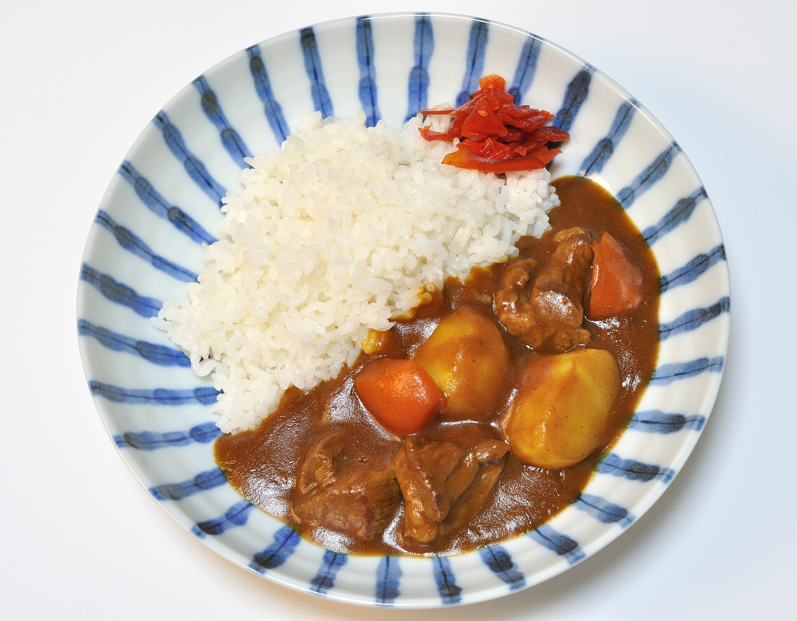

Japanese Curry
Easy Japanese curry using store-bought curry roux cubes: a comforting and flavorful dish perfect for any day.
Ingredients
- Water 600 ml
- Curry Roux Cubes (e.g., Golden Curry) 100g (usually about half a standard box)
- Onion 1 medium
- Carrot 1 medium
- Potato 1 medium
- Cooking Oil 1 tbsp
- Cooked Rice For serving
Steps
- Peel and chop the onion, carrot, and potato into bite-sized pieces.
- Heat the cooking oil in a pot over medium heat. Add the chopped vegetables and sauté until the onions become translucent.
- Add the water to the pot and bring it to a boil. Reduce heat to low, cover, and simmer until the vegetables are tender (about 15-20 minutes).
- Turn off the heat. Break the curry roux cubes into pieces and add them to the pot. Stir well until the roux is completely dissolved and the sauce has thickened.
- Simmer gently for another 5-10 minutes, stirring occasionally, to allow the flavors to meld.
- Serve the Japanese curry hot over a bed of cooked rice. Enjoy!